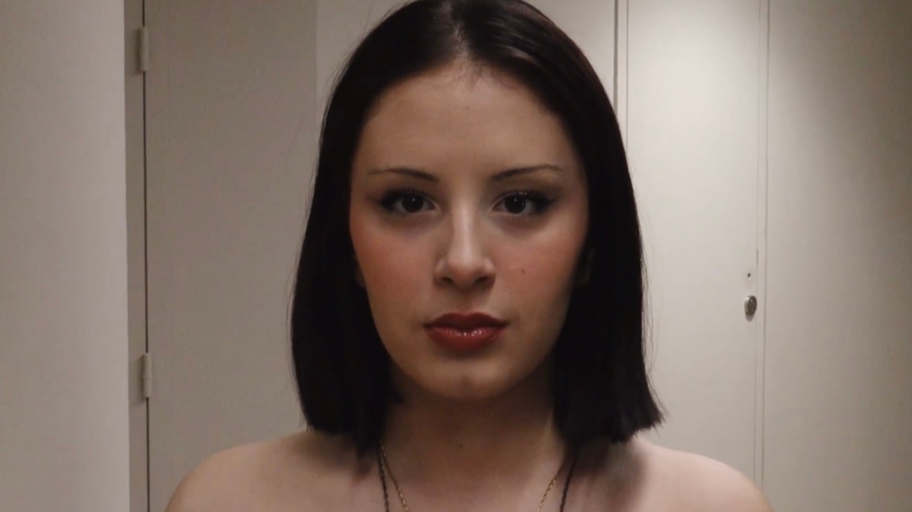
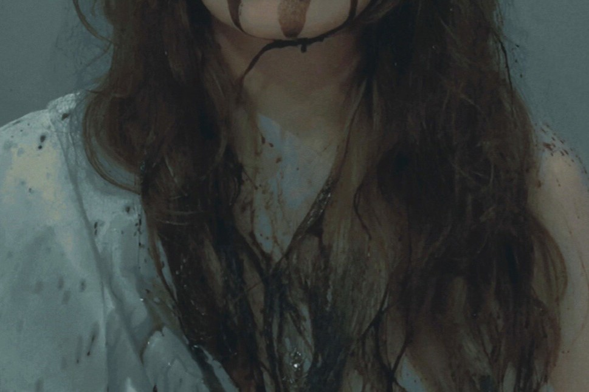

Yvan Chirade, First try, 2025
Kneaded by the storm, particles, grains, sand, body, and landscape intertwine. Seemingly caught in a continuity of multiple speeds, the film unfolds as the landscape is gradually revealed. This video was created spontaneously, caught in the intensity of the moment. It attempts to capture the energy of the wind and explore the surface of this turbulent landscape.
This video is based on an observation I made on a stormy day. Watching the wind carry sand across the ground, I felt as if I were watching a film reel moving at an incredible speed, taking grains, dust, and matter with it.
First try
___________________________
HD Video
16/9
Color
Stereo
00 : 00 : 24
2025
___________________________

